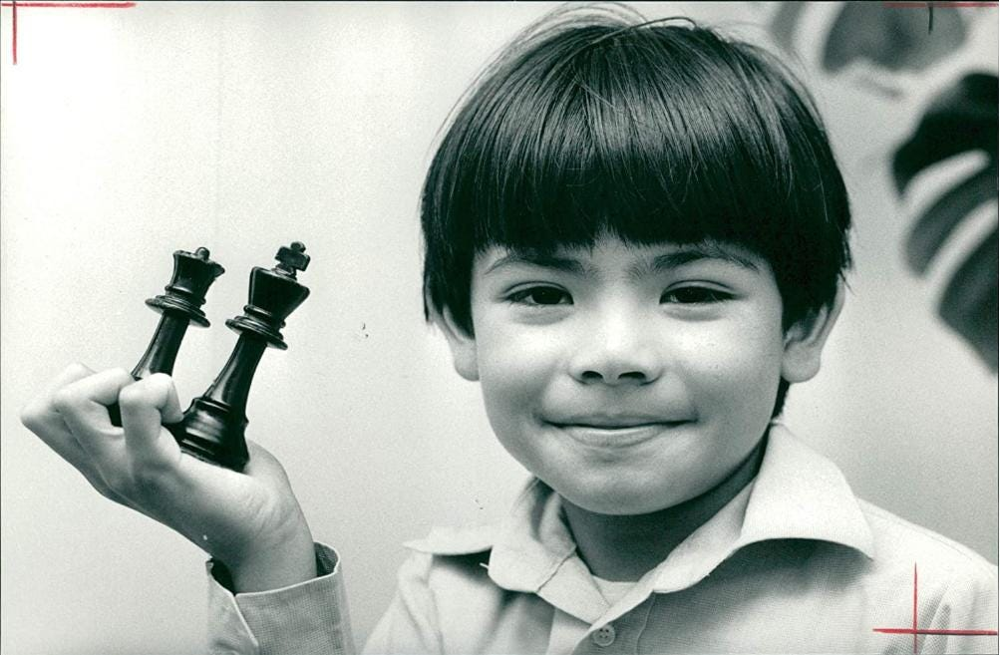
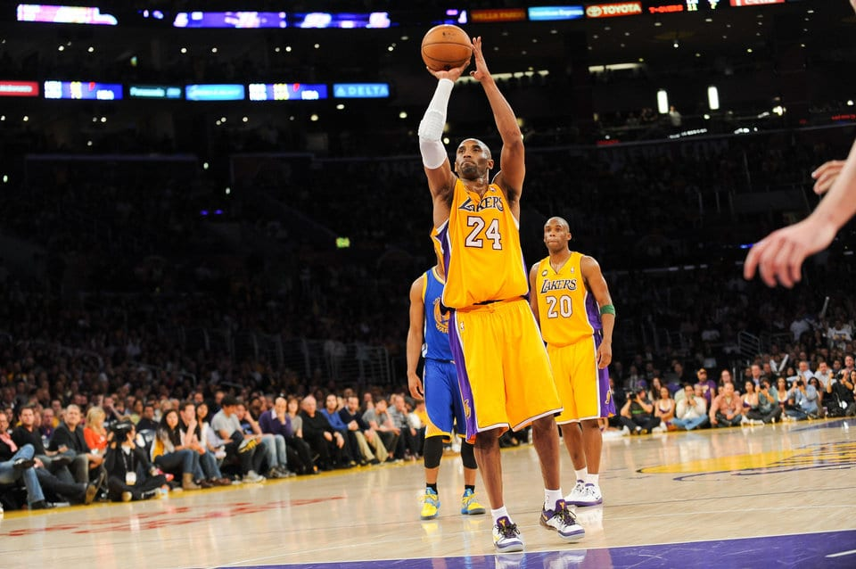

Inspiration
Today's post is going to be a bit different from previos ones. I am not going to share it on my telegram channel or any social media. I just want to write this one for myself.
There are many great people out there to get inspired by. For instance, Cristiano, Einstein, Newton, Tyson, Muhammad Ali, Michael Jordan, Michael Phelps, Federer, Messi, you name it. Today, I want to write my inspirations and why they inspire me, it is going to be mixture of different people from very different fields.
Larry & Sergei
I believe that anyone who is interested in tech or enterpreneurship cannot not knowledge the impact, innovation and game-changing brilliance of Larry Page and Sergei Brin. Unlike Elon Musk, Sam Altman or Zuckerberg, what attracts me about them is that they pursued academy to the point and started their enterpreneurship through academy. Former three being exceptional enterpreneurs, Larry & Sergei had strong knowledge on their field. I have watched couple of interviews & podcasts of Eric Schmidt talking about the two and how they were relentless, stubborn, determined and liberal. In addition, compared to other tech nerds, as they spent quite a lot of money on charities, helping people, and good deeds, they spent yachts, islands which I am fond of it. Just being tech guy and not buying things you would enjoy is not my thing. People should spend on luxury or giant stuff if they enjoy.
Many people know Larry and Sergey for Google, but I admire their brilliance in acquiring Android, YouTube, and launching the Play Store. They were visionaries who identified market gaps and filled them at the right time, with precision. Of course, they had failures—Google+, YouTube Go, and others—but their successful ventures far outweighed these missteps. As I mentioned earlier, their technical excellence was unmatched, but we shouldn’t overlook their entrepreneurial intelligence either. For example, hiring Eric Schmidt as CEO was a bold and strategic move. Unlike other entrepreneurs—Zuckerberg, Musk, or Altman—who retained full control, Larry and Sergey were open to bringing in experienced leadership, learning from them, growing, and eventually taking back the reins. They inspire me to be open to new ideas, excel in my own field, and embrace failures as much as I celebrate triumphs. I strive relentlessly to be as exceptional as they are.
Demis Hassabis
It hasn't been long since I discovered Demis Hassabis. I first learned about him through the documentary on AlphaGo, and then I did some research. He was a child prodigy, a chess champion, graduated from Cambridge, earned a doctoral degree from UCL, and even won a Nobel Prize. He is truly a genius and an exceptional individual. Despite achieving so much in both academia and industry, he has remained humble, grounded, and kind. You can see this in the interviews and podcasts he’s featured in. He is one of the great minds who stays away from media, politics, and fame, focusing instead on his work, expanding his impact, and helping others. I love and regularly follow news about him, his company, and his innovations. He inspires me with his talent, hard work, risk-taking abilities, and the intersection of industry and academia. I hope that one day I will have the honor and opportunity to work for him and his company.
Kobe Bryant
I am a huge fan of sports, and while I admire great athletes like Leo Messi, Neymar, Thierry Henry, and many others, no one in sports comes before Kobe Bryant for me. Unfortunately, due to limitations in information exposure and my age, I only discovered him after his death. Kobe was a tremendous inspiration when it came to hard work, dedication, focus, character, and charisma. I love his interviews, documentaries, and the comments from other celebrities about him. He dedicated himself to greatness and achieved it, becoming an exceptional and unique figure. His hard work, focus, dedication, consistency, kindness, humility, and wisdom inspire me deeply to have extreme self-confidence, strive for excellence in my field, and be both different and as relentless as he was. I continue to appreciate his greatness and dedication, and I do my best to emulate those qualities in my own journey
Kanye West
Disclaimer: I don't agree with all of his socio-political views.
What do you get when you mix Kendrick, ASAP Rocky, Drake, and Tyler? You get Kanye. He was one of the greatest, game-changing, visionary, and open-minded artists of all time. His innovative approach to hip-hop, unique beats, bars, and exceptional music is something that very few, if any, could replicate. Kanye is undoubtedly one of the greats.
But his brilliance wasn’t limited to music. He had remarkable character, charisma, and aura, as well as a unique taste in design, style, and fashion. As an entrepreneur, he revolutionized the sneaker and fashion industries with his boots, shoes, and iconic sneakers. You can’t deny his impact, vision, and greatness in both music and design.
Unfortunately, his mental health struggles led to some serious controversies. Despite this, I continue to admire his mastery of art and design, and I find inspiration in his work every time. Kanye inspires me to be exceptional, to believe in myself and my ability to achieve anything, to experiment with new things both in and outside my field, and to develop a unique style and vision. I miss the old Kanye.
Kendrick
The guy from Compton, a gang-affiliated good kid from mad city who wanted to change the world but realized he could only change himself. Kendrick inspires me not to follow the crowd, but to stop, think critically, and change myself. He teaches me not to indulge in comfort, but to be open, vulnerable, and honest about my experiences. He pushes me to craft my skills and never stop, to keep an open mind, accept the truth, and pursue it relentlessly. I don’t think Kendrick needs an explanation for why he’s great. Instead, I want to share some of his bars that say it all.
I met her on the third night of Chicago
North America tour, my enclave
Fee-fi-fo-fum, she was a model
Dedicated to the songs I wrote and the Bible
Eyes like green, penetratin' the moonlight
Hair done in a bun, energy in the room like
Big Bang for theory, God, hopin' you hear me
Phone off the ringer, tell the world I'm busy
Fair enough, green eyes said her mother didn't care enough
Sympathize when her daddy in the chain gang
Her first brother got killed, he was 21
I was nine when they put Lamont in the grave
Heartbroken when Estelle didn't say goodbye
Chad left his body after we FaceTimed
Green eyes said you'd be okay, first tour, sex the pain away
Take off the false flag
Take off perception
Take off the cop with the eye patch (take that shit off)
Take off the unloyal
Take off the unsure
Take off decisions I lack (take it off)
Take off the fake deep
Take off the fake woke
Take off the I'm broke, I care (take it off)
Take off the gossip
Take off the new logic, that if I'm rich, I'm rare (take it off)
Take off the Chanel
Take off the Dolce
Take off the Birkin bag (take it off)
Take all that designer bullshit off
And what do you have? (Bitch)
I got daddy issues, that's on me
Lookin' for, "I love you, " rarely empathizin' for my relief
A child that grew accustomed, jumping up when I scraped my knee
'Cause if I cried about it, he'd surely tell me not to be weak
Daddy issues, hid my emotions, never expressed myself
Man should never show feelings, being sensitive never helped
His mama died, I asked him why he goin' back to work so soon?
His first reply was, "Son, that's life, and bills got no silver spoon"
Daddy issues, fuck everybody, go get your money, son
Protect yourself, trust nobody, only your mama'n'em
This made relationships seem cloudy, never attached to none
So if you took some likings around me, I might reject the love
Daddy issues kept me competitive, that's a fact, nigga
I don't give a fuck what's the narrative, I am that nigga
Are you the reason why mama and them leavin'
No you ain't shit, you say you love them, I know you don't mean it
I know you're irresponsible, selfish, in denial, can't help it
Your trials and tribulations a burden, everyone felt it
Everyone heard it, multiple shots, corners cryin' out
You was deserted, where was your antennas again?
Where was your presence, where was your support that you pretend?
You ain't no brother, you ain't no disciple, you ain't no friend
A friend never leave Compton for profit or leave his best friend
Little brother, you promised you'd watch him before they shot him
Where was your antennas, on the road, bottles and bitches
You faced time the one time, that's unforgiven
You even faced time instead of a hospital visit
You should thought he would recover, well
The surgery couldn't stop the bleeding for real
Then he died, God himself will say "you fuckin' failed"
You ain't try
I know your secrets nigga
Mood swings is frequent nigga
I know depression is restin' on your heart for two reasons nigga
I know you and a couple block boys ain't been speakin' nigga
Y'all damn near beefin', I seen it and your the reason nigga
And if this bottle could talk *gulp* I cry myself to sleep
Bitch everything is your fault
A$AP Rocky
Jay-Z once said, 'My wife’s Beyoncé, I flex different.' This could easily apply to A$AP Rocky in our generation. Beyond his greatness in music, I want to highlight his drips, clothing, and unique sense of style. His creativity, individuality, and exceptional presence in his music videos set him apart. At one point in his life, he was homeless, and now he’s a defining force in fashion within the hip-hop community. Rocky is the man who has carved out his own voice, style, and greatness, both in hip-hop and fashion.
His drips are more than just clothes; they’re a statement of confidence, an embodiment of self-expression. Whether he’s rocking high-end brands or creating his own, he’s a trendsetter who effortlessly blends streetwear with luxury fashion, making style look effortless yet elevated. He inspires me to never lose hope, to keep honing my skills, and to always push for excellence. I hope one day to be as charismatic and unique in my own style as he is in his. Rocky, all day, every day.
These are my inspirations. Just as I am inspired by Larry, Sergey, and Demis, I am equally inspired by Kanye, Kendrick, Kobe, and Rocky. They keep me motivated, confident, and open to new ideas, driving me to work hard in pursuit of my dreams, to be exceptional, and to achieve greatness. I admire them all and aspire to be among them.
Seoul, Korea
22/11/2024